RésoMolo offre 14 pièces pour modéliser visuellement des problèmes mathématiques. Chaque pièce se place par un clic. Ce document présente ce que fait chaque pièce, ses actions, et les types de problèmes où elle est utile.
Il n'y a pas une seule bonne pièce pour un problème donné. Plusieurs représentations sont toujours possibles. Ce catalogue sert de référence, pas de prescription.
Modes de la barre d'outils
La barre d'outils propose deux modes. Le mode se change en haut à gauche de l'écran.
Simplifié (par défaut) Outils essentiels, 2e cycle
Jeton, Boîte
Barre, Schéma
Calcul, Réponse
Inconnue
Déplacer
Complet Tous les outils, 3e cycle
Tout le mode Simplifié, plus :
Droite, Arbre, Tableau
Diag. bandes, Diag. ligne
Étiquette, Flèche
Cycles du primaire québécois :
Cycle 1 : 1re et 2e année (6-8 ans) ·
Cycle 2 : 3e et 4e année (8-10 ans) ·
Cycle 3 : 5e et 6e année (10-12 ans)
Concret — Manipuler des unités et les grouper
●
JetonCycles 1-2-3
C'est quoi
Un rond coloré qui représente une unité de n'importe quoi : une bille, un dollar, un bonbon, une personne. Un clic = un jeton. Les boutons =3 et =5 du menu contextuel permettent d'en placer plusieurs d'un coup.
Actions
Couleur (bleu, rouge, vert, jaune). Dupliquer (=3, =5). Répartir : crée automatiquement 2 à 6 boîtes et y distribue tous les jetons libres en parts égales; les jetons restants sont placés à côté. Supprimer.
Utile pour
Dénombrer (ajout, retrait)
Représentation un-pour-un
Remplir des boîtes (groupement)
Comparer deux collections
Exemple
« Léo a 8 billes bleues et 5 billes rouges. Combien de billes a-t-il en tout? » — Placez 8 jetons bleus (=5 puis =3), puis 5 jetons rouges. Ajoutez un Calcul (8 + 5 = 13) et une Réponse.
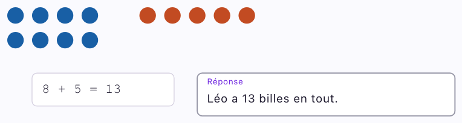
□
BoîteCycles 1-2-3
C'est quoi
Un contenant en pointillé qui regroupe des jetons. La boîte s'agrandit automatiquement pour contenir ses jetons. Déplacer la boîte déplace tout son contenu.
Actions
Nommer. Valeur (texte affiché au centre). Copier la boîte avec tous ses jetons (couleur suivante automatique). Couleur. Supprimer.
Utile pour
Groupement : 4 boîtes de 6 bonbons
Partage : répartir 24 jetons en 3 groupes
Catégorisation : trier par type ou couleur
Multiplication : copier un groupe identique
Exemple
« Il y a 4 sacs de 6 bonbons. Combien de bonbons en tout? » — Créez une boîte, placez 6 jetons dedans, nommez-la « sac 1 ». Copiez la boîte 3 fois. Posez le calcul 4 × 6 = 24 et formulez la réponse.
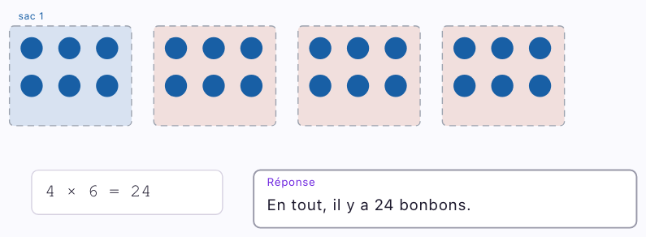
Proportionnel — Représenter des relations par la longueur
▬
BarreCycles 2-3
C'est quoi
Un rectangle dont la longueur représente une quantité. Deux barres côte à côte rendent la comparaison visible d'un seul coup d'oeil. Les barres s'alignent automatiquement à gauche.
Actions
Nommer (texte à gauche). Valeur (texte à l'intérieur). Taille (1× à 10×, fractions). Copier. Fraction (subdiviser en 2 à 12 parts, colorier). Grouper avec accolade. Couleur. Égaliser à une autre barre.
Utile pour
Partie-tout (décomposition)
Comparaison additive (différence)
Comparaison multiplicative (N fois plus)
Fractions (colorer 2/5, comparer 2/5 et 3/8)
Exemple
« Léa a 14 billes, Maxime en a 9. Combien Léa en a-t-elle de plus? » — Placez une barre ×3, nommez « Léa », valeur « 14 ». Ajoutez une barre ×2 rouge « Maxime », valeur « 9 ». Groupez les barres. Posez le calcul et la réponse.
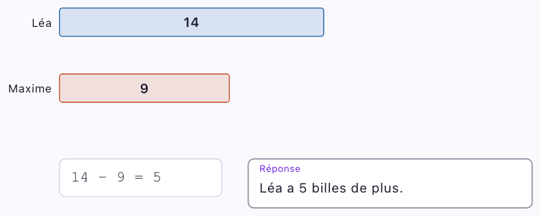
Barre ou Schéma? La Barre est un bloc libre que vous composez manuellement : flexibilité maximale. Le Schéma offre des gabarits pré-structurés avec accolades et annotations automatiques : davantage de guidage. Utilisez la Barre pour construire librement; le Schéma quand la structure du problème correspond à un gabarit.
▐▌
Schéma (modèle en barres structuré)Cycles 2-3
C'est quoi
Un diagramme structuré qui organise des barres selon un gabarit. Le gabarit ajoute automatiquement les éléments visuels (accolade, ligne de différence, multiplicateur) pour représenter la relation entre les quantités.
5 gabarits
Parties-tout — une barre divisée en parties, accolade montrant le total
Comparaison — deux barres de tailles différentes, accolade montrant l'écart
Transformation — une barre avec état initial et changement, séparés par une ligne
Libre — sans structure imposée, l'enfant construit comme il veut
Actions
Choisir/changer le gabarit (bouton « Type » du menu contextuel). Ajouter des parties ou des barres selon le gabarit. Nommer et donner des valeurs. Redimensionner (×0.5 à ×3).
Parties-tout
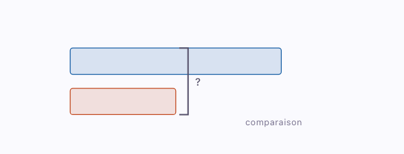
Comparaison
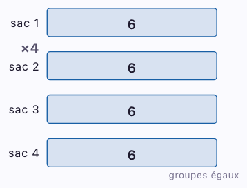
Groupes égaux
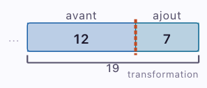
Transformation
Utile pour
Décomposition : 35 bonbons = 20 rouges + 15 bleus
Comparaison : Léa a 14 billes, Marc en a 5 de moins
Multiplication : 3 sacs de 8 pommes
Transformation : il avait 35 $, il dépense 12 $
Exemple — Parties-tout
« 35 bonbons : 20 rouges et 15 bleus. » — Gabarit Parties-tout. Les parties (20, 15) apparaissent dans la barre, l'accolade montre le total (35).
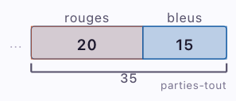
Exemple — Comparaison
« Léa a 14 billes, Marc en a 9. Combien de plus? » — Gabarit Comparaison. Deux barres de tailles proportionnelles, l'accolade marque l'écart (?).
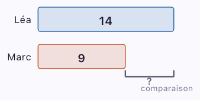
Structuré — Séquences, combinatoire et données
↔
Droite numériqueCycles 1-2-3
C'est quoi
Une ligne horizontale graduée avec des flèches aux deux extrémités. L'enfant place des marqueurs à des positions précises pour visualiser des opérations ou situer des nombres.
Actions
Régler le minimum et le maximum (presets ou saisie libre via « Autre... »). Choisir le pas de graduation (1, 2, 5, 10). Ajuster la largeur. Placer ou effacer des marqueurs.
Utile pour
Addition et soustraction par bonds
Suites et régularités
Situer un nombre entre deux autres
Nombres négatifs (3e cycle)
Exemple
« 8 + 5 = ? Montre-le sur la droite. » — Placez une droite de 0 à 20. L'enfant clique sur la droite pour poser un marqueur à 8, puis un à 13. Les marqueurs montrent visuellement le bond de +5.
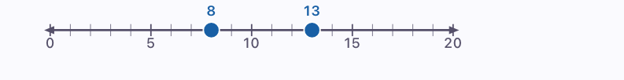
⑂
ArbreCycles 2-3
C'est quoi
Un diagramme en arbre avec des niveaux de choix et des branches. Chaque combinaison de choix mène à une feuille (résultat possible). Le nombre total de résultats s'affiche automatiquement. Un avertissement apparaît au-delà de 16 feuilles et l'arbre est limité à 24 feuilles au total.
Actions
Gabarit rapide (2×2, 2×3, 3×2, etc.). Nommer chaque niveau et chaque option. Ajouter/retirer des niveaux (max 4) et des options par niveau (max 6).
Utile pour
Dénombrement de possibilités (combinatoire)
Probabilités (choix successifs)
Menus, habillements, parcours
Exemple
« Pile ou face, puis rouge ou bleu. Combien de résultats possibles? » — Placez un arbre 2×2. Nommez le niveau 1 « Pièce » (Pile, Face) et le niveau 2 « Couleur » (Rouge, Bleu). L'arbre affiche 4 feuilles. Posez le calcul 2 × 2 = 4 et la réponse.
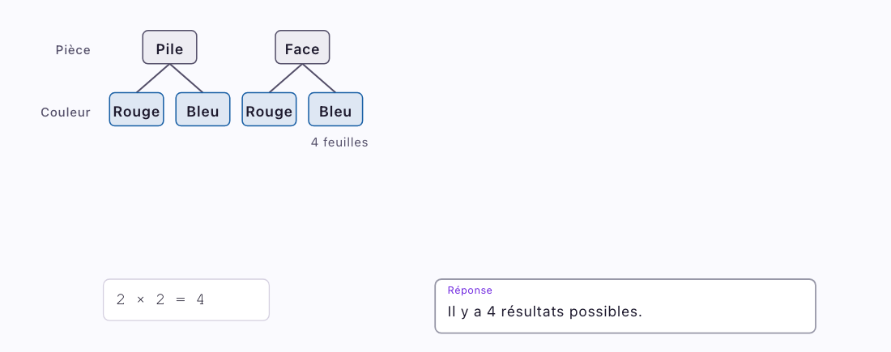
☷
TableauCycles 2-3
C'est quoi
Une grille de données avec lignes et colonnes. Chaque cellule est modifiable directement. La première ligne peut être stylée comme en-tête.
Actions
Ajuster le nombre de lignes (2-10) et de colonnes (2-10). Activer/désactiver l'en-tête. Saisir des données cellule par cellule.
Utile pour
Organiser des données (dénombrement, statistiques)
Tableau de correspondance
Grille de résultats en probabilités
Alternance au diagramme en arbre
Exemple
« Combien de visiteurs chaque jour? » — Placez un tableau 2 colonnes × 4 lignes avec en-tête. L'enfant remplit : Jour / Nb, puis Lun 12, Mar 8, Mer 5. Le tableau organise les données brutes avant de les représenter en diagramme.
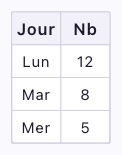
▁▃▅
Diagramme à bandesCycles 2-3
C'est quoi
Un graphique à barres verticales avec titre, axe vertical et catégories (max 6). Chaque bande représente une catégorie avec sa valeur et sa couleur. L'enfant construit son diagramme donnée par donnée.
Actions
Titre. Nom de l'axe vertical. Ajouter/retirer des catégories. Nommer et donner une valeur à chaque catégorie. Couleur par catégorie.
Utile pour
Représenter des données de dénombrement (sondage, inventaire)
Comparer des quantités entre catégories
Statistiques (PFEQ 2e-3e cycle)
Exemple
« Fruits préférés : pommes 12, bananes 8, raisins 5. » — Placez un diagramme à bandes, titrez « Fruits préférés ». Via le menu Données, entrez les catégories et leurs valeurs. Les bandes se dessinent automatiquement avec l'axe « Votes ».
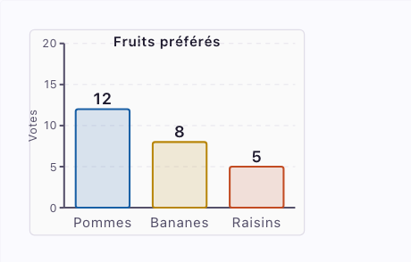
📈
Diagramme à ligne briséeCycles 2-3
C'est quoi
Un graphique linéaire reliant des points de données (max 6). Chaque point a un nom (axe horizontal) et une valeur (axe vertical). Utile pour montrer une évolution ou une tendance dans le temps.
Actions
Titre. Nom de l'axe vertical. Ajouter/retirer des points. Nommer et donner une valeur à chaque point.
Utile pour
Évolution dans le temps (température, croissance)
Tendances et comparaisons temporelles
Statistiques (PFEQ 2e-3e cycle)
Exemple
« Température : lundi 3°, mardi 7°, mercredi 5°. » — Placez un diagramme à ligne, titrez « Température », axe « °C ». Via le menu Points, entrez les jours et les valeurs. La ligne relie les points et montre la tendance.
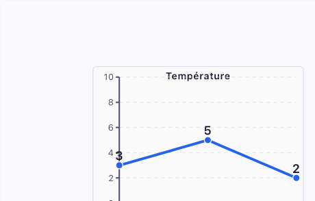
Calculer — Poser ses opérations et formuler sa réponse
=
CalculCycles 1-2-3
C'est quoi
Une zone pour écrire une opération. L'outil ne calcule pas la réponse : c'est l'enfant qui fait le calcul et écrit le résultat. Trois modes disponibles, accessibles via les boutons « En colonnes » et « Division posée » du menu contextuel.
3 modes
Expression — une ligne libre (28 × 4 = ___). L'enfant écrit toute l'expression au clavier.
En colonnes — grille avec un chiffre par case, alignement automatique des unités. L'outil ne calcule rien : l'enfant navigue avec les flèches du clavier et inscrit chaque chiffre, les retenues et le résultat lui-même.
Division posée — format crochet québécois. L'enfant inscrit le dividende, le diviseur, puis complète étape par étape : quotient partiel, produit, reste. Supporte les décimales (dixièmes, centièmes). Navigation par flèches, aucun calcul automatique.
Expression
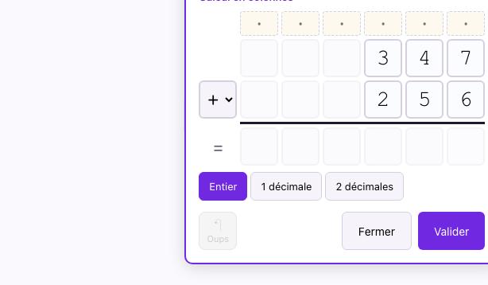
En colonnes
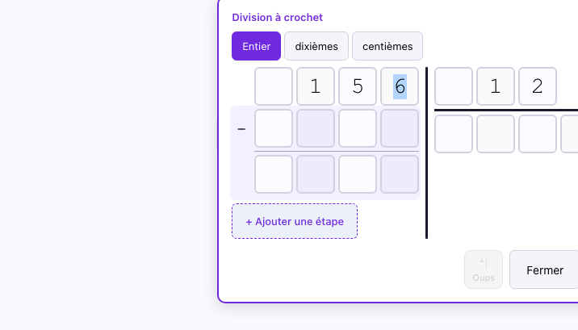
Division posée
Utile pour
Poser et résoudre une opération (+, −, ×, ÷)
Division longue avec reste ou décimales
Vérification (poser l'opération inverse)
Garder une trace écrite du calcul
Exemple
« 28 × 4 = ? » — Placez un Calcul, écrivez « 28 × 4 = ». L'enfant pose l'opération et inscrit le résultat. Le mode « En colonnes » permet de poser la multiplication chiffre par chiffre.
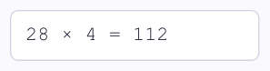
✓
RéponseCycles 1-2-3
C'est quoi
Un encadré distinctif pour formuler la réponse finale en phrase. L'enfant peut écrire librement ou choisir une phrase à trous parmi 6 modèles courants.
6 phrases à trous
Il en reste ___. / Chaque ___ reçoit ___. / ___ a ___ de plus que ___. / ___ a ___ fois plus que ___. / En tout, il y a ___. / La réponse est ___.
Utile pour
Formuler la réponse en phrase complète
Ancrer l'habitude de répondre à la question posée
Structurer la communication (C3 PFEQ)
Exemple
Après avoir calculé 4 × 6 = 24 : — Placez une Réponse et écrivez « En tout, il y a 24 bonbons. » La réponse en phrase complète ancre la compréhension.
Annoter — Nommer et relier
Aa
ÉtiquetteCycles 1-2-3
C'est quoi
Un texte libre que l'on place n'importe où dans l'espace de travail. Se colle automatiquement à une pièce à moins de 15 mm et la suit quand on la déplace.
Actions
Éditer le texte. Déplacer. Supprimer.
Utile pour
Identifier les acteurs du problème (Léo, grand-mère)
Noter une quantité à côté d'une pièce
Annoter sa démarche ou ses hypothèses
Exemple
« Léo donne des billes à sa grand-mère. » — Placez deux boîtes et collez une étiquette « Léo » et « Grand-mère » au-dessus de chacune. Les étiquettes suivent les boîtes si on les déplace.
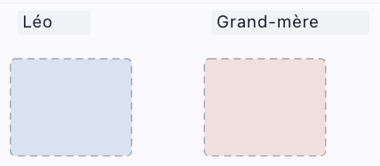
?
InconnueCycles 1-2-3
C'est quoi
Un marqueur « ? » que l'on place sur l'espace de travail pour représenter la valeur cherchée dans le problème. Se colle automatiquement à une pièce à moins de 15 mm. Le texte est modifiable (?, x, n, etc.).
Actions
Éditer le texte. Déplacer. Supprimer.
Utile pour
Identifier ce qu'on cherche dans le problème
Marquer une quantité inconnue sur un schéma ou une barre
Rendre explicite la question avant de calculer
Exemple
« Léa a 14 billes, Maxime en a 9. Combien de plus? » — Placez deux barres (Léa et Maxime) et groupez-les. Collez un « ? » près de l'accolade pour marquer la différence cherchée. Ce geste métacognitif oblige l'enfant à identifier ce qu'il cherche avant de calculer.
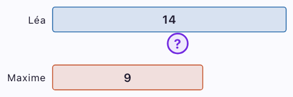
→
FlècheCycles 1-2-3
C'est quoi
Un lien courbe entre deux pièces. Se crée en deux clics : cliquer la source, puis la cible. Cliquer dans le vide annule le premier clic. L'étiquette de la flèche décrit la relation ou l'opération.
« Léo donne 5 billes à Mia. » — Placez deux boîtes (Léo et Mia). Sélectionnez l'outil Flèche, cliquez la boîte de Léo, puis celle de Mia. La flèche courbe relie les deux. Éditez l'étiquette : « donne 5 ».
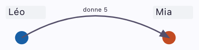
Outils de l'espace de travail
En plus des 14 pièces, l'espace de travail offre des outils qui facilitent la modélisation.
Surlignage
Cliquez sur un mot dans le texte du problème pour le surligner. Quatre couleurs : bleu, orange, vert, gris. Les mots adjacents de même couleur fusionnent. Aide l'enfant à repérer les données avant de modéliser.
Ranger
Le bouton Ranger réorganise automatiquement toutes les pièces non verrouillées. Utile quand l'espace de travail devient encombré ou pour les élèves avec des difficultés d'organisation spatiale.
Verrouillage
Verrouillez une pièce pour empêcher son déplacement. Un cadenas apparaît. Les pièces verrouillées ne sont pas affectées par Ranger. Utile pour pré-structurer un espace de travail.
Annuler / Refaire
Jusqu'à 100 niveaux d'annulation. Réduit l'anxiété face aux erreurs : l'enfant peut toujours revenir en arrière.
Quelle pièce pour quel type de problème?
Plusieurs pièces conviennent souvent au même problème. Le tableau indique les plus naturelles (●) et celles qui peuvent compléter (○). Les pièces Calcul, Réponse, Étiquette et Flèche s'ajoutent à toute modélisation. La pièce Inconnue joue un rôle particulier : en identifiant ce qu'on cherche (?) avant de calculer, l'élève structure sa démarche.
Type de problème
Jeton
Boîte
Barre
Schéma
Droite
Arbre
Tableau
Bandes
Ligne
Ajout / Retrait Léo a 8 billes, il en reçoit 5
●
○
○
○
●
Comparaison additive Mia en a 5 de plus que Noah
○
●
●
○
○
Comparaison multiplicative Camille a lu 3 fois plus que Théo
●
●
Groupes égaux 4 sacs de 6 bonbons
●
●
○
●
Partage 24 biscuits entre 3 amis
●
●
○
○
Partie-tout 35 bonbons : 20 rouges et 15 bleus
○
●
●
Transformation Il avait 35 $, il dépense 12 $
○
●
●
Suites et régularités Compte par bonds de 3 à partir de 5
Les pièces prennent leur plein sens quand on les combine. Voici sept combinaisons fréquentes.
Problème de groupement
Boîte + Jetons + Étiquette + Calcul + Réponse
L'enfant crée une boîte, la remplit de jetons, lui donne un nom. Il copie la boîte pour faire des groupes identiques. Il pose son calcul, puis formule sa réponse. Exemple : 4 sacs contiennent chacun 6 bonbons et 3 chocolats.
Problème de comparaison
Schéma (comparaison) + Calcul + Réponse
L'enfant place un schéma avec le gabarit Comparaison. Deux barres apparaissent. L'accolade montre l'écart. Il nomme les barres, donne les valeurs, pose le calcul, écrit sa réponse. Exemple : Mia a 14 autocollants, Noah en a 9. Combien de plus?
L'enfant modélise l'état initial et le changement dans un schéma Transformation. Il place un « ? » sur la valeur cherchée, pose le calcul et répond. Exemple : Jade avait 35 $, elle dépense 12 $. Combien lui reste-t-il?
L'enfant place une barre, la subdivise en parts (ex. 5 parts via Fraction), colorie les parts mangées. Le « ? » marque les parts restantes. Exemple : Éva mange 2/5 de la pizza. Combien de parts reste-t-il?
Problème de combinatoire
Arbre + Calcul + Réponse
L'enfant place un arbre avec le gabarit approprié. Il nomme chaque niveau et chaque option. Le nombre de feuilles donne le nombre de combinaisons. Exemple : 3 entrées et 4 plats. Combien de menus possibles?
Problème de statistiques
Tableau + Diagramme à bandes + Réponse
L'enfant organise ses données dans un tableau, puis les représente avec un diagramme à bandes. Le diagramme rend les comparaisons visibles d'un coup d'oeil. Exemple : Sondage sur les fruits préférés de la classe.
Partie-tout : Schéma vs Barre libre
Option A : Schéma (parties-tout) · Option B : Barres libres + Grouper
Pour un même problème de décomposition, deux approches sont possibles. Le Schéma fournit la structure automatiquement. Les Barres libres demandent de tout construire, mais offrent plus de liberté. Exemple : 35 bonbons = 20 rouges + 15 bleus. Essayez les deux!
Cette progression suit la logique du mode Simplifié (outils du cycle 2) vers le mode Complet (tous les outils). Adaptez selon les besoins de vos élèves.
Erreurs fréquentes et conseils
Trop de pièces sur le canevas — L'espace devient encombré. Utilisez le bouton Ranger pour réorganiser automatiquement.
Jeton pour de grands nombres — Placer 48 jetons n'est pas efficace. Dès que les quantités dépassent ~20, passez à la Barre ou au Schéma.
Oublier la pièce Réponse — Le modèle est complet, le calcul est posé... mais l'enfant n'a pas formulé sa réponse. Insistez sur l'habitude de toujours placer une Réponse.
Confondre taille de Barre et valeur — Une barre ×3 ne signifie pas « 3 ». La taille est proportionnelle. La valeur numérique s'inscrit séparément avec le bouton Valeur.
Calculer sans identifier l'inconnue — L'enfant se lance dans le calcul avant de comprendre ce qu'il cherche. Encouragez l'habitude de placer le « ? » en premier.
Stratégies de différenciation
RésoMolo intègre plusieurs fonctions qui soutiennent les élèves ayant des difficultés motrices, de coordination, d'organisation spatiale ou d'attention.
Mode Simplifié — Réduit la charge cognitive en présentant seulement 7 pièces. Idéal pour les élèves submergés par trop de choix.
Verrouillage — Pré-structurez l'espace de travail en plaçant et verrouillant certaines pièces avant de confier l'activité à l'élève.
Ranger — Compense les difficultés d'organisation spatiale. Un clic réorganise tout proprement.
Surlignage — Soutient la mémoire de travail en permettant de marquer les données importantes dans le texte. Les 4 couleurs aident à catégoriser.
Annuler / Refaire — Réduit l'anxiété face aux erreurs. Dites aux élèves : « Tu peux toujours annuler, alors essaie! »
Ce document est une aide à la planification. Il ne remplace pas le jugement professionnel de l'enseignant.